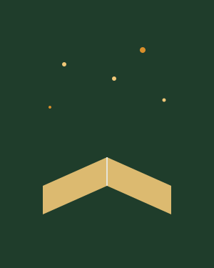

Instituto Vagalume · desde 2016
Uma história bem contada muda o rumo de uma infância.
Levamos livros, contação de histórias e bibliotecas comunitárias para crianças e jovens de territórios de baixa renda em São Paulo — porque acreditamos que ler é o primeiro passo para escolher o próprio futuro.

Em números
O que a leitura em comunidade já construiu
- 14
- bibliotecas comunitárias ativas
- 3.200
- crianças e jovens atendidos por ano
- 180
- mediadores de leitura formados
Nossa missão
Livro na mão, território transformado
Trabalhamos em parceria com escolas públicas, associações de moradores e bibliotecas comunitárias para formar uma rede permanente de acesso ao livro — não como campanha pontual, mas como presença constante no território.
"Antes da biblioteca chegar na nossa rua, meu filho não tinha um livro em casa. Hoje ele lê para os irmãos mais novos antes de dormir." — mãe de leitor, Comunidade Jardim das Rosas
Sua tarde livre pode virar a biblioteca de alguém.
Contadores de história, mediadores de leitura e doadores de livros são sempre bem-vindos.